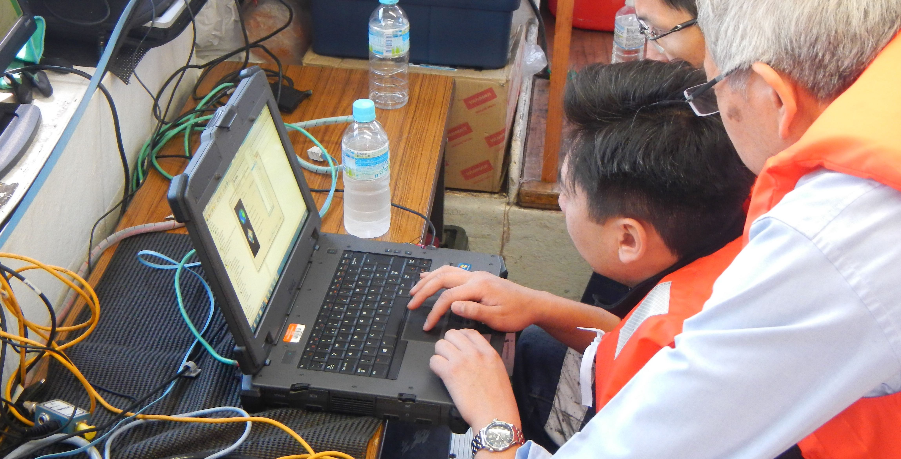
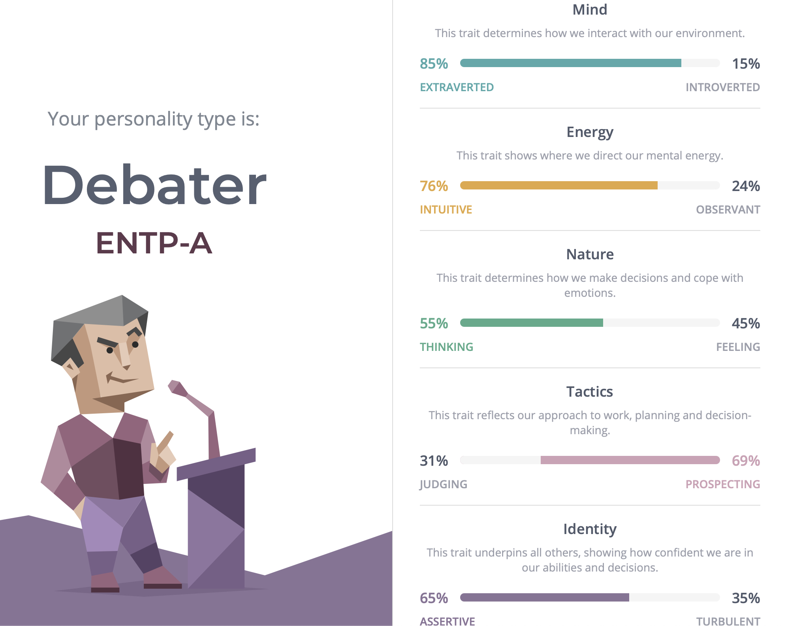
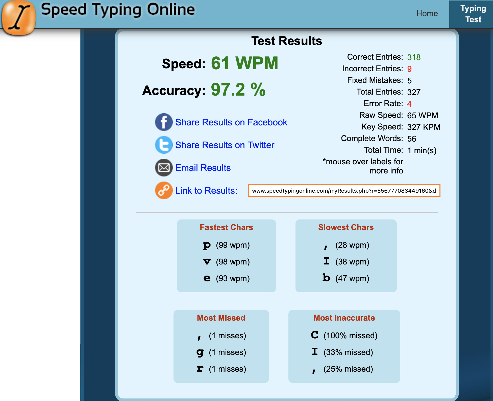

PERSONAL INFORMATION
Thank you for taking the time to review my personal profile. My name is Daniel and I was born and raised in Melbourne.
The Nanthathammiko family moved from Laos due to the Third Indochina War and the communist rule with many family members spreading across the world to countries such as Australia, France and the USA.
My upbringing was an interesting mix of traditional Lao and identifiably suburban Australian.
I have studied many different topics over the years such as Media and Communication and Spatial Science however I had always been more interested in learning on the job (which hasn’t been helpful in gaining any certification) which has made me a jack of all trades.
I thoroughly enjoy listening and playing music in which, I have been able to experience being a touring and recording musician in my 20’s.
My work over the past 12 years has been within the Spatial data industry from working on mining projects to developing systems that allow data collection in tough conditions.
Prior to the current scenario, I've been fortunate enough to travel the world for my current work as it takes me to all sorts of sites.
INTEREST IN IT
IT has always played an important part in my life on a personal and professional level. My interest in IT in a general sense began when I was in my early teens. My dad had just purchased a 486 CPU PC with a CD Rom and a 3.5” Floppy Disk. We only had a few games on floppy such as Indiana Jones and the last crusade and Wolfenstein (thanks to one of my uncles!) but had a CD Rom of the encyclopaedia Britannica which was super helpful throughout school.
When we upgraded from Windows 3.1 to Windows 95 on our next machine (IBM with a Pentium CPU), I was responsible for setting it up and getting it up and running. The time spent setting it up allowed me to lurk around the W95 install disk. To my surprise it had some easter eggs on there such as Pinball, Hover (the maze game) and a life changing video clip, Weezer’s Buddy Holly (shaped my musical tastes from a very young age!).
From there, my interest in IT and tech in general spiralled out of control and now I’m the go to guy to make things work, to understand systems at work and explain to the people I deal with how to utilise our systems in very complex and stressful settings.
I chose RMIT as I have previously studied here over a decade ago and it was a good environment for technically inclined studies.
I hope to gain a more updated and relevant understanding of the IT industry on a professional level as I have been sheltered from what other companies might be doing in this space and where I could be more efficient in my planning and execution of projects requiring IT consideration.
IDEAL JOB

Enterprise Solutions Architect
https://www.seek.com.au/job/53349064?type=standard#searchRequestToken=a01a7138-eb6d-4459-8465-18f1cadfbb63
This role (and the role of a Solutions Architect in general) is one that will connect the commercial requirements of the business and bring it to life on a technical level, ensuring that the business can execute their business initiatives and remain focused on the core strategy or vision.
This position (and occupation in general) is very appealing to me as I already have the skill set to understand customers’ requirements and can align their requirements to a solution.
My experience also extends to implementing technical solutions on their sites, training end users and following through with regular checks to ensure systems are working as they should.
This experience on the customer engagement side with onboarding very niche hardware is a good starting point for me.
Defining the occupation, I’m interested in working towards is helping my development to become a true all-rounder as it is plain to see an Enterprise Architect must possess a deep understanding of the technology that exists now, and which solutions would truly meet the customers’ demands.
To summarise the required skills required based on current advertisements, it is expected that a suitable candidate would have:
- Enterprise domain expertise
- Deep understanding of frameworks, current industry standards and trends, database knowledge
- Cloud platforms and API integration
- Security, authorisation management
- IT Degree or similar
- 5+ years’ experience in relevant platforms to the employer
- General programming capabilities
- Experience and demonstrable AGILE practices
Where do I slot in regarding the expected minimum requirements?
Enterprise domain expertise – I have a lightly touched on enterprise domain systems for many of my customers.
Most of my experience is identifying conflicts and issues with our software and ensuring it is performing on the clients’ systems without issue.
This does require lots of back and forth with varying IT departments and a general understanding of an end users’ permissions.
I have setup a Microsoft 365 Business Premium account at work to begin my own understanding of Microsoft’s Enterprise/Business suite of products which includes Microsoft Azure.
I’m constantly trying to figure out ways to streamline our efforts for better productivity as this is fundamental for any business.
Deep understanding of frameworks, current industry standards and trends, database knowledge
I have a broad understanding of current IT systems trends however as I don’t have in-depth experience outside of my work experience or insight to a client’s full enterprise setup, my knowledge is very basic.
I will be ensuring that at every opportunity, I will have more in-depth discussions with my clients IT departments to round out my understanding.
Cloud platforms and API integration, Security, authorisation management
As above, I will be working more in-depth with cloud-based platforms to understand the purpose and function. This should inform me on how best to utilise these tools to achieve positive business goals.
On the API integration and Security side, I plan to develop basic Web Apps that will require data to be pushed/pulled (low risk, openly available data to do simple things) and then further develop aspects such as logins to “personalise” aspects of information.
IT Degree, experience, and programming
This current course will begin to fill out my requirement of tertiary education. I am fortunate to already be employed fulltime by a large software/hardware development company (6 years already!) and counting.
My role is in a commercial capacity right now with a requirement for technical experience and skills however my goal will be to extend this into the software and systems development side over time to provide me with real experience.
PROFILE
MYERS-BRIGGS TESTS |
|
|  |
A Debater (ENTP) is a person with the Extraverted, Intuitive, Thinking, and Prospecting personality traits. They tend to be bold and creative, deconstructing and rebuilding ideas with great mental agility. They pursue their goals vigorously despite any resistance they might encounter.
|
LEARNING STYLE TEST |
|
|
You're a visual learner! You prefer to use pictures, images and spatial understanding to learn new material.
Visual learners should:
- Take notes during class as writing things down helps you remember information
- Use flow charts, mind maps and diagrams for note taking
- Visualise ideas or facts as a picture before writing them down
- Replace words with images, pictures, colour and other visual media
- Use visual media such as colour and images to help you learn
- Read material before you learn it
|
|
SPEED TYPING TEST |
|
|  |
These results suggest that I am somewhat of an average touch typer. I have a high degree of accuracy in my touch typing.
I used this as a test for potential employers as this should directly relate to efficiency and accuracy in implementing code, scripting and so on.
|
What do the results of these tests mean for you?
Looking at the results from the Myers-Briggs test, learning style test and a Speed Typing Test, I was labelled a Debater that required a visual learning style with an average typing speed and a relatively good accuracy in typing.
I agree that I have a debating type personality. It has served me well to progress through much stagnation in the workplace and has helped me to overcome obstacles in commercial activity and in my personal life.
However, there is detriment to having a debating personality and it is one that I already recognise and have been actively working to ensure I am indeed a team player and move in the direction of a team (if they’re moving in the right direction).
The learning style test also confirmed that I prefer visual learning styles. This doesn’t necessarily mean in an educational setting as I find myself writing and drawing in meetings and discussions with clients to better grasp their requirements at a later time.
The Speed Typing test was one that was merely to show that I could push out text, html, css, python scripts in a very quick time frame due to my comfort levels in touch typing.
How do you think these results may influence your behaviour in a team?
I do not believe that there is any real negative impact from my current behaviour in a team setting. I’m a very collaborative person and generally enjoy mixing thoughts and ideas with others to come up with the best solution together.
There are times when I will take a leadership role when I know I can chorale everyone and move a team forward to deliver a solution but there are also times when I can be the team player because the most important task is to deliver a positive result.
How should you take this into account when forming a team?
Sometimes we don’t get a choice in how a team is formed and what personality/ideological conflicts will arise because of this. I will always maintain in the forefront of my mind that professionalism and deliver of result is number one.
My goal will always be to push everyone to offer their best in a group setting regardless of the role I will play.